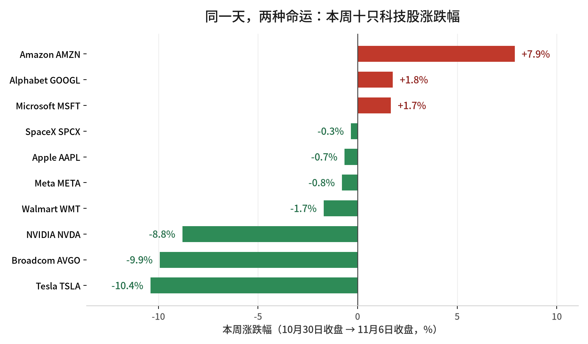
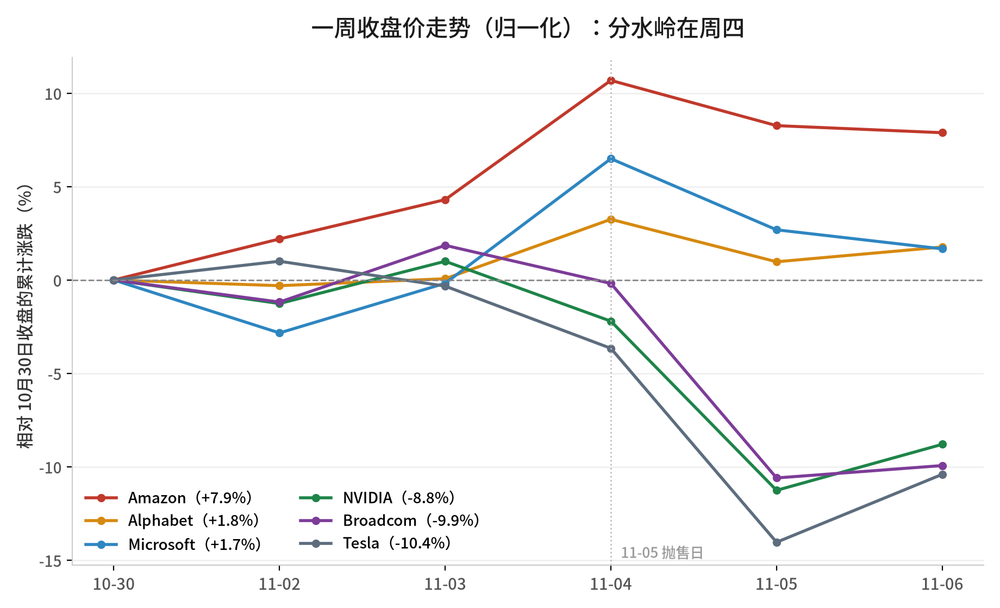

先看一组放在一起会打架的数字。
本周四，纳斯达克综合指数单日跌超 5%，较 10 月 6 日的历史收盘高点回撤逾 10%，年内第三次进入回调；费城半导体指数当天跌约 10%，是 2020 年 3 月以来最惨的一个交易日。
同一天，亚马逊只跌了 2.2%。整个一周下来，它涨了 7.9%。
而特斯拉，一周跌了 10.4%。英伟达跌 8.8%，博通跌 9.9%。
同一个板块，同一个题材，同一个星期。差距不是几个点，是二十个百分点。
我把 11 月 2 日到 6 日的五份日报串了一遍，复盘完这一周，我的结论只有一句：
这周跌的不是「AI 需求见顶」，跌的是「AI 这笔账，终于有人开始算利息了」。
说清楚前提：以下价格全部是收盘价，不用盘中快照。方法是把每天日报里的「前收」当成前一天收盘价，一路串到 11 月 6 日收盘，链是可以对齐的。整周涨跌幅的基准，是 10 月 30 日收盘。
· · ·
01
一周成绩单：三个涨，七个跌
10月30日收盘 → 11月6日收盘

数据来源：Nasdaq 日报行情表（api.nasdaq.com 收盘价链），作者计算
涨幅榜只有三家：亚马逊 +7.9%、Alphabet +1.8%、微软 +1.7%。
跌幅榜前三：特斯拉 -10.4%、博通 -9.9%、英伟达 -8.8%。
中间还夹着一条容易被忽略的消息：美光本周跌出了这份 Top 10 名单，沃尔玛顶了上来。名单本身在换人，这比涨跌幅更能说明资金在往哪边挪。
还有一个数字，能说明这周市场有多「信不足」：五份日报一共归并出 343 个事件，其中 313 条被标注为「待人工核验」——单一来源或缺少正文。
也就是说，这周的很多叙事，是靠二手转述跑起来的。这不代表它们假，但代表你看到每一条「重磅」的时候，都该先问一句：一手在哪。
02
分水岭在周四
一周收盘归一化走势

数据来源：Nasdaq 日报行情表，以 10 月 30 日收盘为 100 归一化，作者计算
图上有个很清楚的拐点。周一到周三，六条线基本是缠在一起往上走的；周四一天，直接劈成两半。
周三还是全周最好的一天——微软涨 6.7%，亚马逊涨 6.1%，苹果涨 5.3%，Alphabet 涨 3.2%。财报季的余温把指数又推了一把。
然后周四，四家公司单日跌掉 9% 以上。
| 11月5日单日 | 跌幅 | 全周 |
| 特斯拉 TSLA | -10.8% | -10.4% |
| 博通 AVGO | -10.4% | -9.9% |
| 英伟达 NVDA | -9.3% | -8.8% |
| SpaceX SPCX | -9.1% | -0.3% |
注意最后一行的反差：SpaceX 一天跌 9.1%，一周只跌 0.3%。因为周五它又涨回来 8.6%。
这种「一天打穿、第二天抢回」的走法，通常不是基本面在定价，是仓位在换手。
关于抛售的触发原因，公开报道给出的解释集中在两件事上：中期选举后民主党在得州、佐治亚等数据中心密集州获胜，市场担心数据中心审批与电价成本上升；同时，对 AI 巨额资本开支能否收回的怀疑，已经从「担忧」变成「卖出」。
英伟达当天跌约 9%，一夜蒸发约 4500 亿美元市值，是 2025 年 1 月 DeepSeek 冲击以来最差的一天；AMD 跌 17.3%，美光跌 17.5%。
这里要说清楚一个口径问题：11 月 5 日那份日报的快照抓的是盘前，所以表里只有 9:10 AM ET 的前瞻数据，真正的收盘跌幅，是从次日日报的「前收」反推出来的。数字能对上，但当天日报本身没有记录收盘。
这条也顺便说明一件事：日报是快照，不是终值。看单日涨跌，别只看快照那一栏。
03
三个硬事实
以下都是有出处的事实，不是我的看法
一、Alphabet 借了 60 亿欧元，而且是加价借的。
11 月 2 日，Alphabet 分七档发行 60 亿欧元债券，期限 2 年到 19 年，认购需求超过 170 亿欧元，接近三倍超额。代价是收益率明显高于今年 5 月那次发行——AI 支出疑虑引发信用市场抛售之后，连最优质的科技发行人也要付溢价。
同一份季报里的另一组数字更直接：第三季度资本开支 514 亿美元，经营性现金流 423 亿美元，自由现金流 -91 亿美元。其中还包含 52 亿美元的欧盟罚款支出。全年资本开支指引是 1950 亿至 2050 亿美元，并且明确说 2027 年还会显著增长。
翻译成人话：赚钱的速度，暂时没赶上花钱的速度。钱从哪来？债券市场。
二、微软的云，真的在加速。
2027 财年第一季度，营收 923 亿美元，同比增 19%；Azure 首次单独按美元披露，单季 331.7 亿美元，同比增 48%，比上一季度的 43% 又提速了；微软云整体 639 亿美元，增 30%。下季度 Azure 按固定汇率指引 49% 至 50%。
这组数字说明 AI 需求端没有塌。同一个星期，亚马逊 AWS 也被管理层描述为可以在 2027 至 2028 年增长 40%、最终做成万亿美元业务。
三、英伟达把「卖芯片」改成了「卖电」。
11 月 6 日，黄仁勋给出一个换算口径：下一代 Vera Rubin 平台，每吉瓦算力对应约 400 亿美元收入。作为对照，Hopper 约 180 亿，Grace Blackwell 约 250 亿。
这个口径不是会计指标，是叙事工具。它把客户的采购决策，从「一张卡多少钱」换成了「一吉瓦电能换回多少钱」。数据中心真正稀缺的是电和地，不是卡——这个换算正好卡在痛点上。
顺带一提，英伟达第三季度财报定在 11 月 17 日，公司自己的营收指引是 1080 亿美元，上下浮动 2%。
另外两件事记一笔：Meta 给出第四季度营收指引 730 亿至 760 亿美元，同时第三季度计提了 99 亿美元法律费用；苹果第四财季营收 1145 亿美元、同比增 12%，毛利率 47.9%（含约 1 个百分点的关税退税），但管理层明确说下季度内存成本会更高。
04
三个判断
以下是判断，会被证伪，前提我一并写明
判断一：AI 交易的主变量，从「需求有多猛」切换成了「钱有多贵」。
过去两年，市场给 AI 的定价逻辑很简单：资本开支越大，说明需求越确定，估值越高。这周第一次反过来——资本开支越大，融资需求越大，对利率和信用利差越敏感，股价越先跌。
Alphabet 一边发债、一边自由现金流转负、一边单日市值损失约 5000 亿美元，这三件事发生在同一周，不是巧合。
前提是：长端利率不大幅下行。如果无风险利率快速回落，融资成本压力缓解，这条判断的力度会明显减弱。
判断二：分化会继续，而且分法很清楚——收租的，和盖楼的。
本周涨的三家，亚马逊、Alphabet、微软，共同点是云收入在加速、有明确的现金流入口；跌得最狠的三家，英伟达、博通、特斯拉，共同点是估值建立在「下一轮产能/产品」上，且离终端现金流更远。
判断一家公司在哪一边，我只问三个问题：
一，它的收入，来自别人的资本开支，还是来自别人的运营预算？
二，它的自由现金流符号，这个季度是正的还是负的？
三，它今天卖的东西，折旧年限是三年还是十年？
这三个问题答完，本周的涨跌名单基本就解释完了。
判断三：周四那一下，是仓位问题，不是逻辑问题。
理由有三个。第一，抛售当天没有任何一家公司下调业绩指引。第二，微软 Azure 加速、亚马逊云增长这些需求端证据，是在同一周出现的。第三，周五就出现反弹，SpaceX 一天涨 8.6%、特斯拉涨 4.2%、英伟达涨 2.8%。
但这条判断有个硬前提：11 月 17 日英伟达的财报，不能证伪需求。如果 1080 亿美元的指引兑现不了，或者下季度指引明显走弱，那这就不是仓位问题，是逻辑问题，前面两条判断都要重做。
05
跟进项核查
本周日报「后续观察清单」逐条联网核查
五份日报一共留下 11 条可跟踪的观察项。逐条查下来：8 条拿到新证据，2 条只拿到一部分，1 条至今没有公开信息。
有进展特斯拉与 SpaceX 合并
10 月 20 日 SpaceX 三季度电话会上，马斯克确认两家董事会都已成立由独立董事组成的特别委员会，他本人因存在利益冲突被排除在讨论之外。公开报道讨论的结构包括 SpaceX 收购特斯拉、或在新设控股公司下合并，对价形式包含全股票。门槛也明确了：需要占全部流通股 50% 以上的赞成票，约 20 亿股（总股本约 39.5 亿股），马斯克持股 19.8%。目前仍无正式合并协议、换股比例与代理文件。
来源：36氪 Trading Stocks Now
有进展Alphabet 60 亿欧元债的定价与用途
11 月 2 日完成发行，分七档、期限 2 至 19 年，认购需求超 170 亿欧元。定价高于 5 月那次发行，反映 AI 支出担忧引发的信用市场抛售。募集资金未单独披露具体投向，公司口径与 AI 基础设施扩张、以及 2027 年资本开支显著增长相关。
来源：Reuters（转载） 新浪财经
有进展Alphabet 自由现金流与 AI 资本开支
第三季度资本开支 514 亿美元，超过经营性现金流 423 亿美元，自由现金流 -91 亿美元；含 52 亿美元欧盟罚款。全年 2026 年资本开支指引上调至 1950 亿至 2050 亿美元，并重申 2027 年将显著增长。方向已被证实，且恶化的速度比市场预期更快。
来源：Nasdaq Alphabet IR
有进展Anthropic 对 Google 的千亿美元级承诺
Anthropic 的 S-1 文件披露了对多家云厂商的算力承诺：与 Google 至少约 1145 亿美元（另有 1213 亿美元的口径），与亚马逊至少 1100 亿美元，与微软至少 449 亿美元，与 xAI 最高约 1205 亿美元。从「单一媒体报道」升级为「招股书披露」，这是本周跟进项里证据等级提升最大的一条。
来源：Times of AI 36氪
有进展微软 Azure 增速能否延续
Azure 单季 331.7 亿美元、同比增 48%，较上一季 43% 提速，高于约 44.8% 的共识；微软云 639 亿美元、增 30%；下季度 Azure 固定汇率指引 49% 至 50%。至于「AI 资本开支的具体金额与性质」，公司仍未单独披露——这半条没有进展。
来源：MarketBeat 财报纪要 新浪财经
有进展英伟达 11 月 17 日财报
官方已定档 11 月 17 日美股盘后（美东时间下午 5 点）召开 2027 财年第三季度电话会，季度截至 10 月 25 日。公司给出的第三季度营收指引为 1080 亿美元，浮动 2%。上一季度实际 EPS 2.22 美元，高于预期的 2.09 美元。
来源：NVIDIA 投资者关系
部分进展Vera Rubin 的时间表、规格与客户
「每吉瓦 400 亿美元」这个数字，在英伟达 2027 财年第二季度电话会原文里就能查到（Hopper 约 180 亿、Grace Blackwell 约 250 亿、Vera Rubin 约 400 亿），说明不是媒体加工。但量产时间表、内存带宽等具体规格、客户部署规模，至今没有任何官方披露。
来源：NVIDIA Q2 FY27 电话会原文
部分进展特斯拉 Cybertruck 停产与 Cybercab 扩产
11 月 6 日马斯克在 X 上官宣：2027 年年中前后，在得州超级工厂逐步结束 Cybertruck 生产，产线腾给 Cybercab，用词是「winding down」（逐步收尾），不是立即停产。另有报道称 Cybercab 服务下月将在达拉斯上线。但 NHTSA 相关许可进展、产线改造资本开支、是否计提资产减值，均无公开信息。
来源：CBS Texas Fox Business
有进展Meta 第四季度指引与法律费用冲击
第四季度营收指引 730 亿至 760 亿美元已由官方电话会确认，对应同比增长约 22% 至 27%；第三季度计提 99 亿美元法律程序费用，全年总费用指引 1750 亿至 1790 亿美元；同时宣布 2 比 1 拆股，预计 2027 年 1 月底开始交易。
来源：Meta Q3 2026 电话会原文
有进展苹果 10-K 与毛利率问题
第四财季（截至 9 月 26 日）营收 1145 亿美元、同比增 12%，毛利率 47.9%，其中约 1 个百分点来自关税退税；管理层在电话会上明确提示下季度内存成本更高。10-K 年报已于本周提交 SEC。
来源：Apple Newsroom
无进展Google Cloud 剩余履约义务与 TPU 对外销售规模
日报里连着三天提到要看「TPU 对外销售的收入规模、客户数量」。查遍公开信息，没有找到任何一份官方披露给出 TPU 对外销售的金额或客户数。也没有找到 Anthropic 承诺额被计入 Google Cloud backlog 的官方口径。这一条，维持无进展。
检索范围：公司公告、SEC 文件、主流财经媒体，截至 11 月 7 日
06
下周盯四件事
按重要性排序
一，11 月 17 日英伟达财报。1080 亿美元的指引能不能兑现，以及下季度指引的方向，是本周所有判断的总闸门。
二，Alphabet 债券的二级市场表现。发行价只是一个点，上市后利差走阔还是收窄，才是市场对「科技巨头借钱搞 AI」的真实投票。
三，特斯拉的合并与投票程序。是否出现正式协议、代理文件、以及董事会建议，决定这个是「叙事」还是「交易」。
四，数据中心的电。中期选举后，得州、佐治亚等地的审批节奏与电价政策，会直接进到超大规模厂商的资本开支模型里。这条最慢，但也最长。
· · ·
最后回到开头那组打架的数字。
亚马逊 +7.9%，特斯拉 -10.4%，两家公司都在讲 AI，都在美国，都在同一个指数里。差别不在故事讲得好不好，在于这个季度，谁在往回收钱，谁在往外掏钱。
市场这一周只做了一件事：把这两类公司，重新定了不同的价。
至于这个定价对不对——11 月 17 日见分晓。
这一周最贵的不是下跌，是「借钱也要投」这件事，第一次被明码标价。
数据来源：Nasdaq Top 10 科技与资本情报日报 2026-11-02 至 2026-11-06（行情 api.nasdaq.com、SEC EDGAR、Nasdaq News / PR Newswire）；整周涨跌幅以 10 月 30 日收盘为基准、由每日「前收」与 11 月 6 日收盘价串链计算；跟进项核查来源见文中链接。
本文所引数据均来自公开信息，仅为信息整理与个人分析记录，不构成任何投资建议。市场有风险，决策请独立判断。